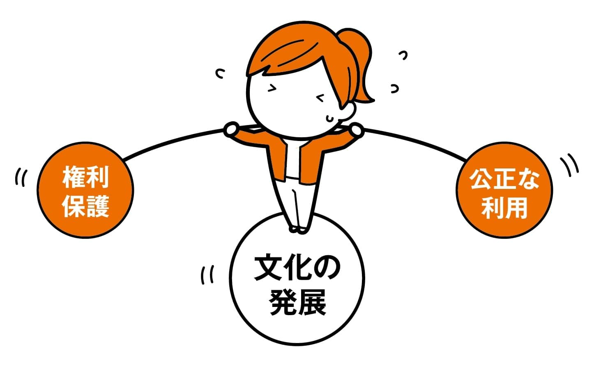
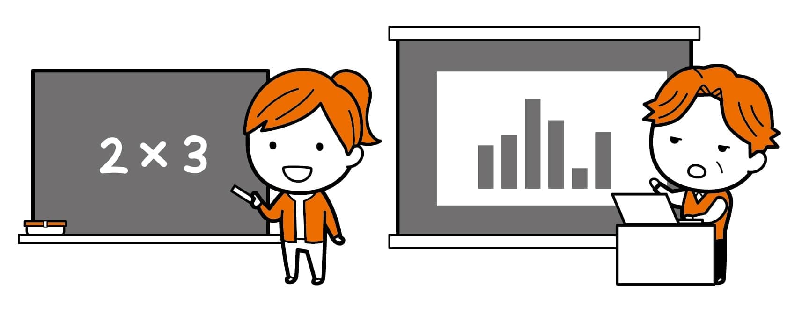
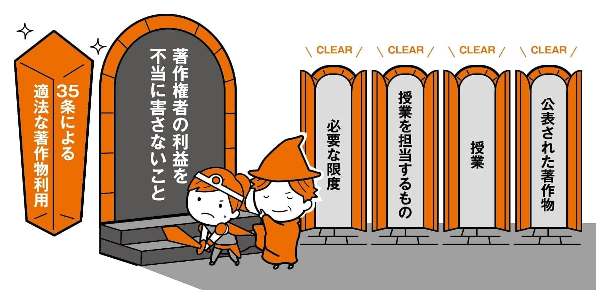
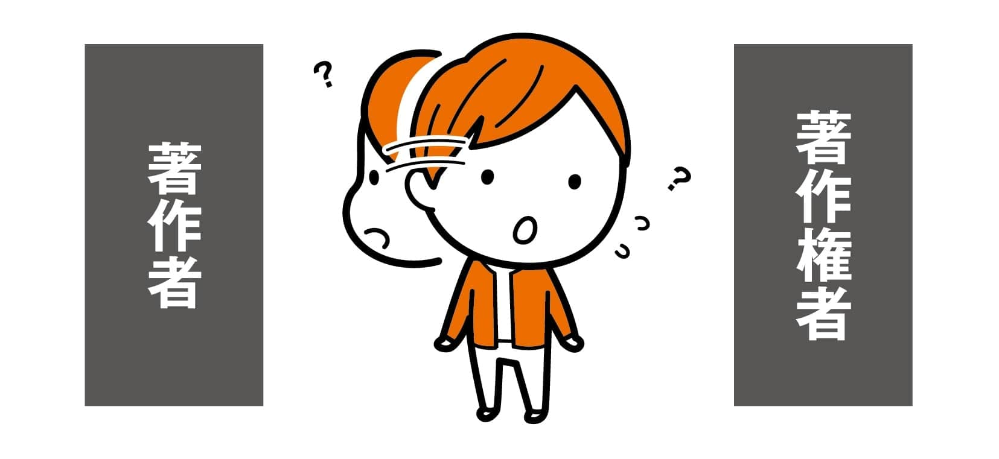

このサイトは、主に教育機関で授業をされている先生を対象に著作権について説明しています。
SARTRAS（授業目的公衆送信補償金等管理協会）の共通目的基金の助成を受けて、AXIES（大学ICT推進協議会）が制作しています。
はじめに
本書の読み方、キャラクターや著者の紹介です。
-
01
著作権法の基礎
著作権法の目的について説明します。著作権法は単に権利を保護するためだけに法律が書かれているのではないことを理解しましょう。
-
02
授業における著作権
授業で第三者の著作物を扱う際に、どんな法律上のきまりがあるか、その内容や用語の定義、および授業で著作物を扱う際のフローについて説明します。
-
03
授業における
著作物利用Q&A
授業で第三者の著作物を扱う際の具体的な事例について、Q&A形式で説明を行います。
-
04
許諾の取り方
保護期間や利用条件などで自由に利用できない場合、かつ権利制限を適用できない場合に著作権者の許諾が必要となります。